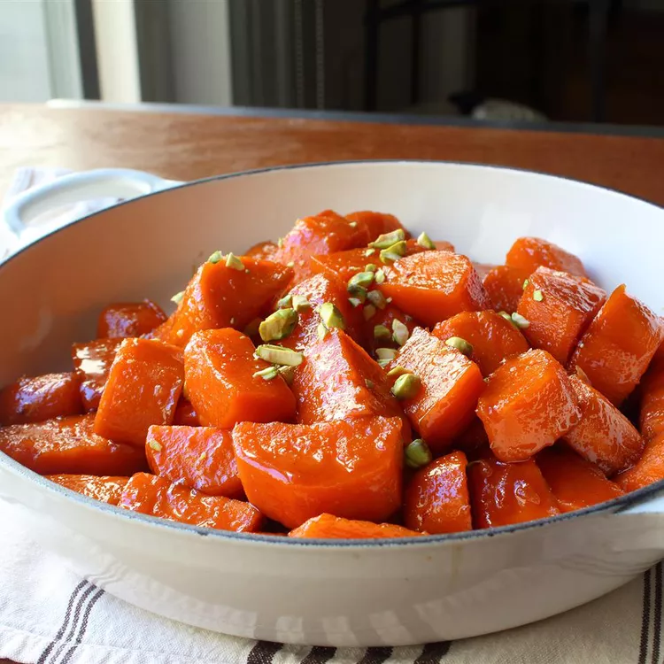

Home
Photo:

Description:
So I guess this recipe is actually more candied sweet potatoes than candied yams...
do with that what you will. They still look very tasty to me.
I guess the author is not a huge fan of sweet side dishes, but he makes an exception for this one.
It's easy to see why after looking at the photo and how much sugar and butter is in this recipe.
Ingredients
Yams:
- 3 tablespoons kosher salt
- 2 quarts cold water
- 3 pounds orange-fleshed sweet potatoes, peel and cut into 2-inch pieces
Glaze:
- 1 cup brown sugar
- 4 tablespoons unsalted butter
- 1/2 cup freshly squeezed lemon juice
- 1/4 cup maple syrup
- 1/2 teaspoon ground ginger
- 1/4 teaspon ground cinnamon
- 1 pinch cayenne ppepper
- Salt to taste
- Chopped pistachios, pecans, or walnuts for garnish
Directions
- Stir salt into 2 quarts of cold water in a large pot.
Transfer sweet potato pieces to the pot and place over high heat;
bring to a simmer. Reduce heat to medium-low and simmer until potatoes
are not quite tender but still cooked, 5 to 7 minutes. Use the tip of a
knife to test for doneness. Drain.
- Place brown sugar, butter, lemon juice, maple syrup, ginger, cinnamon,
cayenne, and pinch of salt in a skillet. Place over medium-high heat,
stirring until glaze ingredients melt and start bubbling. Continue cooking,
stirring occasionally, until mixture begins to thicken, 4 to 6 minutes.
- Transfer drained sweet potatoes to a skillet. Increase heat to high; cook and
stir until potatoes are coated with glaze and very tender, and glaze has thickened,
5 to 8 minutes. Transfer to serving dish; garnish with chopped nuts.